Thème : Du photon au courant électrique — modèle particulaire de la lumière · © C. Poirault-Gauvin
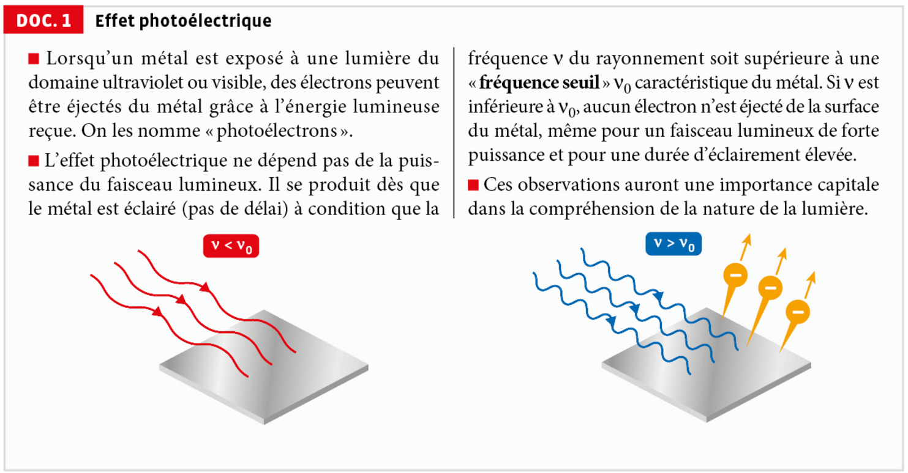
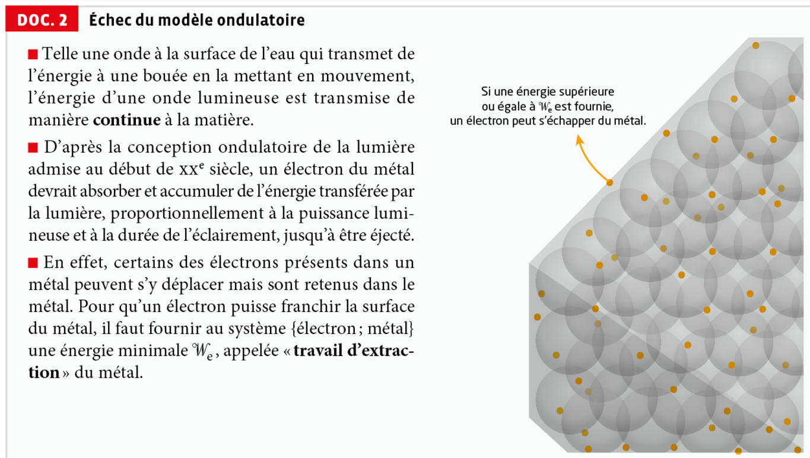
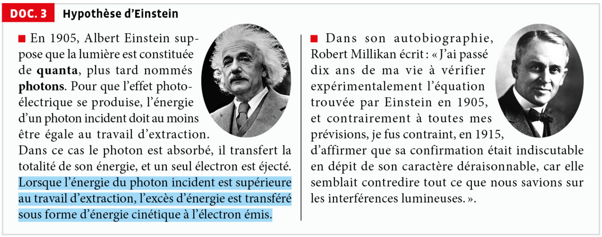
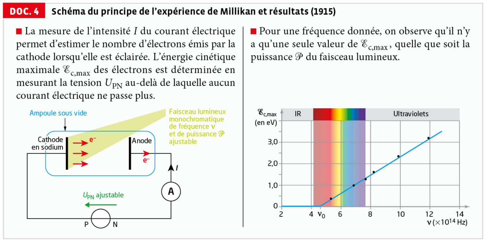
a. L'effet photoélectrique est l'éjection d'électrons (« photoélectrons ») d'un métal soumis à un rayonnement lumineux. Il se manifeste pour des rayonnements du domaine ultraviolet ou visible, à condition que leur fréquence dépasse une fréquence seuil ν₀, caractéristique du métal.
b. Selon l'hypothèse d'Einstein (1905), la lumière est constituée de grains d'énergie appelés quanta (photons) ; chaque photon transporte une énergie E = h·ν, où h est la constante de Planck et ν la fréquence du rayonnement.
a. Le modèle ondulatoire prévoit un transfert d'énergie continu et cumulatif : quelle que soit la fréquence ν, un électron finirait, avec un temps d'exposition suffisant, par accumuler assez d'énergie pour être éjecté, et l'effet devrait dépendre de la puissance et de la durée d'éclairement. Or le DOC.1 montre que l'effet est instantané (pas de délai), indépendant de la puissance du faisceau, et n'apparaît que si ν > ν₀ : ces observations sont incompatibles avec le modèle purement ondulatoire.
b. Dans le modèle corpusculaire, chaque photon est absorbé individuellement par un seul électron et lui transfère la totalité de son énergie hν. Si hν < We (soit ν < ν₀), aucun électron ne peut être extrait, quel que soit le nombre de photons incidents (donc quelle que soit la puissance) : l'existence d'une fréquence seuil ν₀ = We/h s'interprète ainsi naturellement.
Bilan d'énergie sur le système {électron ; métal} : l'énergie hν du photon absorbé sert d'abord à fournir le travail d'extraction We, puis l'excédent est transféré sous forme d'énergie cinétique à l'électron éjecté :
a. La relation Ec,max = h·ν − We est celle d'une droite affine en fonction de ν, de pente h et d'ordonnée à l'origine −We. Le graphique du DOC.4 montre bien, pour ν > ν₀, une droite croissante dont la pente correspond à la constante de Planck h et qui coupe l'axe des abscisses en ν₀ = We/h : les mesures de Millikan confirment quantitativement l'hypothèse d'Einstein.
b. Cette expérience a permis de trancher en faveur du modèle corpusculaire (photons) face au modèle ondulatoire alors dominant, validant l'hypothèse d'Einstein malgré les réticences initiales de la communauté scientifique (cf. citation de Millikan). Elle a ouvert la voie à la mécanique quantique.
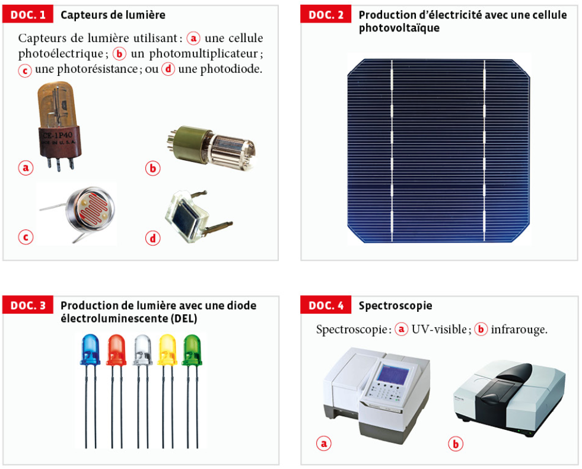
Les quatre capteurs (cellule photoélectrique, photomultiplicateur, photorésistance, photodiode) fonctionnent tous par absorption de photons : un photon incident cède son énergie à un électron du matériau, ce qui modifie une grandeur électrique mesurable (courant émis, résistance électrique, ou tension aux bornes d'une jonction), permettant ainsi de détecter la lumière.
Un photon absorbé par le semi-conducteur de la cellule, d'énergie hν ≥ Eg (le gap du matériau), fait passer un électron de la bande de valence à la bande de conduction, créant une paire électron-trou. Le champ électrique interne de la jonction PN sépare ces charges, ce qui génère un courant électrique exploitable.
Dans une DEL, c'est le phénomène inverse : le courant électrique fait recombiner des électrons et des trous au niveau de la jonction. Chaque recombinaison libère (émet) un photon d'énergie E = h·ν = Eg, dont la couleur dépend du gap du semi-conducteur utilisé — d'où les différentes couleurs de DEL visibles sur le document.
Dans les deux cas, l'échantillon est traversé par un rayonnement dont on mesure l'intensité transmise : les photons dont l'énergie correspond exactement à un écart entre deux niveaux d'énergie de la molécule sont absorbés. En UV-visible, ces transitions concernent les électrons (liaisons π, doubles liaisons conjuguées) ; en infrarouge, elles concernent les vibrations des liaisons. Le spectre d'absorption obtenu renseigne ainsi sur la structure de la molécule étudiée.
Quelle que soit l'application choisie, l'exposé doit clairement identifier s'il s'agit d'une absorption ou d'une émission de photons, exprimer le bilan d'énergie associé (E = h·ν, comparaison à We ou à Eg selon le cas), et s'appuyer sur une donnée expérimentale ou un ordre de grandeur pour illustrer le propos.
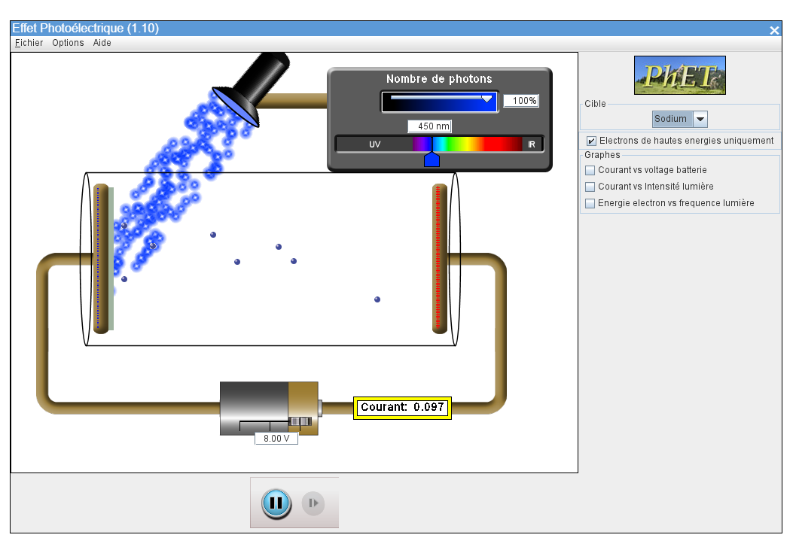
En imposant U = 8 V (l'anode au potentiel le plus élevé), le courant mesuré augmente puis se stabilise dès que tous les photoélectrons émis par la photocathode sont collectés par l'anode : une tension positive suffisamment grande accélère les électrons vers l'anode. Le champ électrique E entre les électrodes est dirigé de l'anode (+) vers la photocathode (−). L'électron portant une charge négative, la force électrique Fe = −e·E qu'il subit est dirigée en sens opposé au champ E, donc de la photocathode vers l'anode : elle accélère bien les photoélectrons vers l'anode, cohérent avec l'augmentation du courant observée.
À cette tension inversée, le courant mesuré dans le circuit est nul : aucun électron n'atteint plus l'anode. Cela ne signifie pas que l'effet photoélectrique a cessé — des photoélectrons continuent d'être émis par la photocathode — mais le champ électrique freinateur (de sens inversé) est maintenant assez intense pour que même l'électron le plus rapide (celui d'énergie cinétique maximale) n'ait plus assez d'énergie pour franchir la distance jusqu'à l'anode.
D'après le théorème de l'énergie cinétique appliqué à l'électron le plus rapide, entre la photocathode (vitesse initiale associée à Ec,max) et l'anode (vitesse nulle, cas limite à la tension d'arrêt), le travail du poids étant nul :
où e est la charge élémentaire.
Avec |Uarrêt| = 0,80 V, et sachant que 1 eV est par définition l'énergie cinétique acquise par un électron accéléré sous une tension de 1 V :
Ec,max = 0,80 eV
L'effet photoélectrique est l'émission d'électrons (photoélectrons) par un matériau soumis à un rayonnement lumineux, à condition que la fréquence de ce rayonnement dépasse une fréquence seuil ν₀ caractéristique du matériau — un phénomène indépendant de l'intensité lumineuse, contrairement à ce que prévoit le modèle ondulatoire de la lumière. Son interprétation par Einstein (1905), à l'aide de la notion de photon d'énergie E = h·ν, puis sa confirmation expérimentale précise par Millikan (1915), ont joué un rôle historique majeur en établissant la nature à la fois ondulatoire et corpusculaire de la lumière, posant l'une des bases de la mécanique quantique.
En juin 2019, il a été décidé que les ondes hertziennes (ondes électromagnétiques) de fréquences voisines de 1,5 GHz seraient réservées à l'utilisation de la 5G en France.
Calculer l'énergie |ΔE| d'un photon associé à une onde hertzienne de fréquence ν = 1,5 GHz.
ν = 1,5 GHz = 1,5×10⁹ Hz.
|ΔE| = 6,63×10⁻³⁴ × 1,5×10⁹ ≈ 9,9×10⁻²⁵ J.
Cette énergie extrêmement faible est typique des photons du domaine radio (ondes hertziennes), très peu énergétiques comparés aux photons visibles ou UV.
Calculer la longueur d'onde dans le vide d'un rayonnement X pour lequel l'énergie d'un photon vaut 3,0×10⁻¹⁵ J.
λ = (6,63×10⁻³⁴ × 3,00×10⁸) / (3,0×10⁻¹⁵) ≈ 6,6×10⁻¹¹ m (soit environ 66 pm).
Cette valeur est bien cohérente avec le domaine des rayonnements X (longueurs d'onde de l'ordre de 10⁻¹¹ à 10⁻⁸ m).
La diode infrarouge d'une télécommande de téléviseur émet des photons d'énergie proche de 1,3 eV.
DONNÉE Le domaine spectral infrarouge est [8×10⁻⁷ ; 1×10⁻³] m.
Déterminer la longueur d'onde dans le vide du rayonnement associé à ces photons et vérifier qu'il s'agit d'un rayonnement infrarouge.
Conversion de l'énergie en joules : E = 1,3 × 1,6×10⁻¹⁹ = 2,08×10⁻¹⁹ J.
λ = (6,63×10⁻³⁴ × 3,00×10⁸) / (2,08×10⁻¹⁹) ≈ 9,6×10⁻⁷ m (soit 956 nm).
Cette valeur appartient bien à l'intervalle [8×10⁻⁷ ; 1×10⁻³] m donné pour le domaine infrarouge : il s'agit donc bien d'un rayonnement infrarouge.
Un laser Hélium-Néon de puissance P = 2,0 mW émet un rayonnement monochromatique de longueur d'onde dans le vide λ = 633 nm.
Déterminer le flux de photons produit par le laser, c'est-à-dire le nombre de photons émis par seconde.
Énergie d'un photon :
E = (6,63×10⁻³⁴ × 3,00×10⁸) / (633×10⁻⁹) ≈ 3,14×10⁻¹⁹ J.
Le flux de photons Φ (nombre de photons émis par seconde) correspond au rapport de la puissance sur l'énergie d'un photon :
Φ = 2,0×10⁻³ / 3,14×10⁻¹⁹ ≈ 6,4×10¹⁵ photons par seconde.
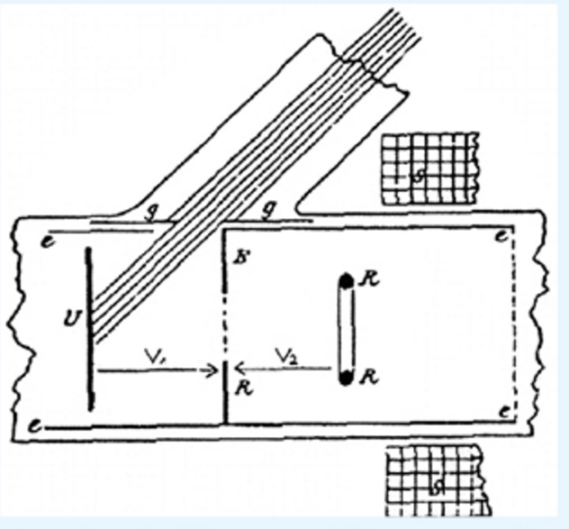
a. Describe the photoelectric emission. Define the threshold frequency in order to state the photoelectric emission main characteristic.
b. Explain why the photoelectric effect study acquires such a historical and scientific importance through distinguishing the light models accepted before and after 1905.
c. Outline how a photoemissive cell works; use the words listed below: cathode, anode, photoelectron, kinetic energy, electric current.
a. When a metal surface is illuminated by light of frequency ν, electrons ("photoelectrons") can be emitted from the surface, provided ν exceeds a threshold frequency ν₀, characteristic of the metal. Below ν₀, no electron is emitted, whatever the light intensity. This is the main characteristic of the photoelectric effect: it depends on the light's frequency, not on its intensity.
b. Before 1905, light was described only as a wave (following Young's and Fresnel's work on interference and diffraction). This model predicts a continuous, cumulative energy transfer, and cannot explain why the photoelectric effect requires a minimum frequency rather than a minimum intensity or exposure time. In 1905, Einstein proposed that light also behaves as a stream of energy quanta (later called photons), each carrying an energy E = h·ν. This model explains the threshold frequency naturally and was later confirmed quantitatively by Millikan (1915) — a turning point that helped establish quantum physics.
c. Incident light strikes the cathode inside the evacuated cell. If a photon's energy is high enough, it ejects a photoelectron from the cathode, giving it some kinetic energy. Under the applied voltage, this photoelectron travels across the cell to the anode, producing a measurable electric current in the external circuit — but only if the light's frequency exceeds the threshold frequency of the cathode material.
Une cellule photovoltaïque en CIGS (Cu-In-Ga-Se), de surface S = 240 cm², est exposée à un
éclairement solaire de puissance surfacique 850 W·m⁻². Sous test, elle délivre une puissance électrique
Pélec = 4,1 W. Sa longueur d'onde de coupure vaut λc = 1078 nm.
Données : h = 6,63×10⁻³⁴ J·s ; c = 3,00×10⁸ m·s⁻¹ ; 1 eV = 1,6×10⁻¹⁹ J.
1) Calculer la puissance lumineuse Plum reçue par la cellule.
2) En déduire le rendement de conversion η de la cellule.
3) Calculer l'énergie de gap Eg du matériau, en eV, à partir de λc.
4) Un photon incident de longueur d'onde λ = 550 nm atteint la cellule. Calculer son énergie en eV et indiquer, en justifiant, s'il peut générer une paire électron-trou exploitable.
5) En déduire l'énergie cinétique maximale, en eV, emportée par le porteur de charge libéré.
1) S = 240 cm² = 2,40×10⁻² m². Plum = éclairement × S = 850 × 2,40×10⁻² = 20,4 W.
2) η = Pélec / Plum = 4,1 / 20,4 ≈ 0,201, soit η ≈ 20 %. Cette valeur est cohérente avec le rendement typique d'une cellule CIGS commerciale (20–23 %).
3) Au seuil, un photon de longueur d'onde λc apporte tout juste l'énergie Eg :
Eg = (6,63×10⁻³⁴ × 3,00×10⁸) / (1078×10⁻⁹) = 1,85×10⁻¹⁹ J. En eV : Eg = 1,85×10⁻¹⁹ / 1,6×10⁻¹⁹ ≈ 1,15 eV.
4) E = h·c / λ = (6,63×10⁻³⁴ × 3,00×10⁸) / (550×10⁻⁹) = 3,62×10⁻¹⁹ J ≈ 2,26 eV. Comme E (2,26 eV) > Eg (1,15 eV), l'énergie du photon est suffisante pour faire passer un électron de la bande de valence à la bande de conduction : ce photon génère bien une paire électron-trou exploitable par la cellule.
5) L'excédent d'énergie par rapport au gap est emporté sous forme d'énergie cinétique :
Ec = 2,26 − 1,15 = 1,11 eV (soit environ 1,77×10⁻¹⁹ J).
Contrairement à un atome isolé pour lequel seuls quelques niveaux d'énergie électroniques sont autorisés, dans le cas d'un métal, les niveaux d'énergies peuvent prendre toutes les valeurs comprises dans certains intervalles, les « bandes d'énergie », séparées par des « bandes interdites ». La dernière bande d'énergie « contenant » des électrons est la « bande de conduction ».
Si l'on apporte assez d'énergie au métal, un électron de la bande de conduction peut en être extrait en atteignant le « niveau du vide » correspondant à la situation où l'électron est immobile et n'est plus sous l'influence du métal. S'il gagne encore de l'énergie, cet électron isolé peut obtenir une énergie cinétique quelconque. La figure ci-contre représente une partie du diagramme énergétique pour un métal et une transition quantique y est repérée.
On considère un métal dont le travail d'extraction, c'est-à-dire l'énergie minimale qu'il faut lui fournir pour extraire l'un de ses électrons, est noté We.
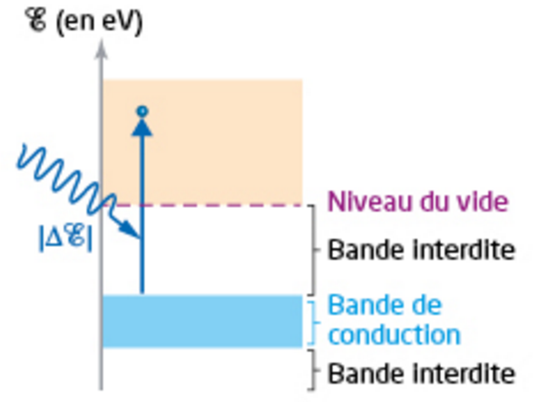
a. Reproduire le diagramme et y repérer le travail d'extraction We ainsi que l'énergie cinétique Ec de l'électron extrait du métal dans l'état final de la transition.
b. En déduire, par un bilan d'énergie, la relation entre |ΔE|, We et Ec (relation d'Einstein).
c. Expliquer pourquoi, d'après le diagramme, l'énergie cinétique Ec acquise par l'électron extrait est la valeur maximale Ec,max pouvant être obtenue avec le photon considéré. On pourra représenter sur le diagramme une autre transition possible avec le même photon.
d. On note ν la fréquence de la lumière associée au photon et ν₀ la fréquence seuil du métal. Montrer que l'on peut écrire : Ec,max = h·(ν − ν₀).
a. Le travail d'extraction We correspond à l'écart d'énergie entre le haut de la bande de conduction et le niveau du vide. L'énergie cinétique Ec de l'électron extrait correspond à l'écart entre le niveau du vide et la position finale de l'électron (l'extrémité de la flèche) sur le diagramme.
b. Bilan d'énergie : le photon absorbé transfère au système {électron ; métal} une énergie |ΔE|. Cette énergie sert d'abord à fournir le travail d'extraction We (extraire l'électron jusqu'au niveau du vide), puis l'éventuel excédent est transféré sous forme d'énergie cinétique Ec à l'électron libre :
c. Ec,max correspond au cas où l'électron extrait est initialement le moins lié possible, c'est-à-dire situé tout en haut de la bande de conduction (juste sous le niveau du vide) : pour cet électron, l'énergie à fournir pour atteindre le niveau du vide est minimale, donc l'énergie cinétique restante après extraction est maximale. Une autre transition possible avec le même photon partirait d'un niveau plus bas dans la bande de conduction : l'électron obtiendrait alors une énergie cinétique Ec < Ec,max.
d. On a |ΔE| = h·ν (énergie du photon incident) et We = h·ν₀ (définition de la fréquence seuil : le travail d'extraction correspond exactement à l'énergie d'un photon de fréquence seuil ν₀). En reportant dans la relation du b) :
soit finalement Ec,max = h·(ν − ν₀).
Le schéma ci-contre illustre le principe d'une cellule photoélectrique utilisée comme capteur de lumière.
a. Interpréter qualitativement l'effet photoélectrique à l'aide du modèle particulaire de la lumière.
b. Expliquer qualitativement le fonctionnement de ce capteur.
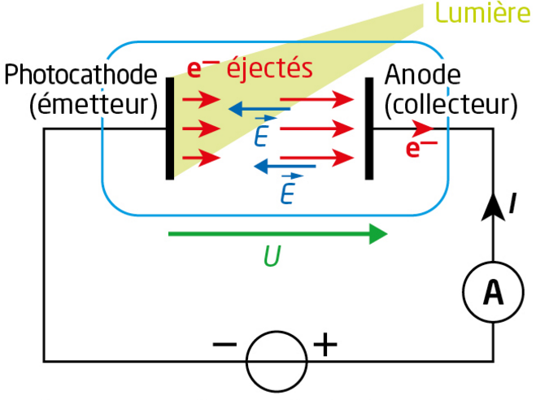
a. Dans le modèle particulaire (photonique) de la lumière, un faisceau lumineux est constitué de photons, chacun porteur d'une énergie E = h·ν. Lorsqu'un photon d'énergie suffisante (h·ν ≥ We, travail d'extraction de la photocathode) est absorbé par un électron de la photocathode, celui-ci peut être éjecté (photoélectron), avec une énergie cinétique Ec = h·ν − We. En dessous du seuil (h·ν < We), aucun électron n'est éjecté, quelle que soit l'intensité lumineuse — un comportement que seul le modèle particulaire permet d'expliquer.
b. Les électrons éjectés de la photocathode (émetteur) sont accélérés par le champ électrique E régnant entre les deux électrodes (créé par la tension U appliquée), et se dirigent vers l'anode (collecteur). Leur collecte à l'anode constitue un courant électrique I, mesuré par l'ampèremètre dans le circuit extérieur. Ce courant n'apparaît que si la lumière incidente a une fréquence supérieure à la fréquence seuil de la photocathode ; à fréquence fixée, son intensité dépend du nombre de photoélectrons éjectés par seconde, donc de la puissance lumineuse reçue.
La photocathode d'une cellule photoélectrique est éclairée par une lumière monochromatique de longueur d'onde dans le vide λ = 400 nm. La longueur d'onde seuil de l'effet photoélectrique pour ce métal vaut λ₀ = 650 nm, et on note We son travail d'extraction.
a. Établir, par un bilan d'énergie, la relation entre l'énergie cinétique maximale Ec,max des électrons émis par la photocathode et la fréquence ν de la lumière incidente.
b. Déterminer, en J, la valeur du travail d'extraction We d'un électron pour le métal de la photocathode.
c. Estimer la valeur maximale de l'énergie cinétique d'un photoélectron dans la situation considérée.
a. Bilan d'énergie (relation d'Einstein) : l'énergie du photon incident h·ν sert d'abord à fournir le travail d'extraction We, l'éventuel excédent étant transféré sous forme d'énergie cinétique à l'électron :
soit Ec,max = h·ν − We.
b. Le travail d'extraction correspond à l'énergie d'un photon de longueur d'onde seuil λ₀ :
We = (6,63×10⁻³⁴ × 3,00×10⁸) / (650×10⁻⁹) ≈ 3,06×10⁻¹⁹ J.
c. Énergie du photon incident : E = h·c/λ = (6,63×10⁻³⁴ × 3,00×10⁸) / (400×10⁻⁹) ≈ 4,97×10⁻¹⁹ J.
Ec,max = E − We ≈ 4,97×10⁻¹⁹ − 3,06×10⁻¹⁹ ≈ 1,91×10⁻¹⁹ J.
Un panneau solaire de surface d'aire S = 2,0 m² est formé de cellules photovoltaïques dont on cherche à déterminer le rendement.
DONNÉE En cas d'ensoleillement optimum, la puissance surfacique au sol du rayonnement solaire vaut PS = 1,0 kW·m⁻².
a. Nommer les types d'énergies reçue et utile lors de l'emploi du panneau solaire.
b. Estimer le rendement des cellules photovoltaïques du panneau solaire sachant que la puissance électrique maximale intervenant vaut Pélec = 160 W.
a. L'énergie reçue par le panneau solaire est l'énergie lumineuse (rayonnement solaire, énergie radiative) ; l'énergie utile, produite en sortie, est l'énergie électrique.
b. Puissance lumineuse reçue : Plum = PS × S = 1,0×10³ × 2,0 = 2,0×10³ W.
Rendement : η = Pélec / Plum = 160 / 2000 = 0,08, soit η = 8 %.
La cathode d'une cellule photoélectrique, formée de césium, est éclairée par une lumière monochromatique de longueur d'onde dans le vide λ = 405 nm.
DONNÉE Longueur d'onde seuil, dans le vide, du césium : λ₀ = 592 nm.
a. Déterminer la valeur du travail d'extraction We du césium.
b. Estimer la valeur de l'énergie cinétique Ec,max que possèdent les électrons les plus rapides qui viennent d'être éjectés de la cathode.
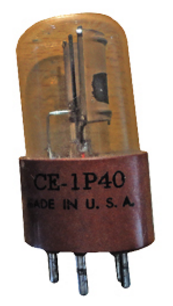
a. Le travail d'extraction correspond à l'énergie d'un photon de longueur d'onde seuil λ₀ :
We = (6,63×10⁻³⁴ × 3,00×10⁸) / (592×10⁻⁹) ≈ 3,36×10⁻¹⁹ J, soit We ≈ 2,10 eV.
b. Énergie du photon incident : E = h·c/λ = (6,63×10⁻³⁴ × 3,00×10⁸) / (405×10⁻⁹) ≈ 4,91×10⁻¹⁹ J, soit E ≈ 3,07 eV.
Ec,max = E − We ≈ 3,07 − 2,10 ≈ 0,97 eV (soit environ 1,55×10⁻¹⁹ J).
Le travail d'extraction du zinc vaut We = 3,4 eV.
a. Interpréter qualitativement l'effet photoélectrique à l'aide du modèle particulaire de la lumière.
b. Calculer la fréquence seuil ν₀ du zinc pour l'effet photoélectrique. En déduire la valeur de la longueur d'onde seuil λ₀ du zinc.
c. Déterminer l'énergie cinétique maximale Ec,max des électrons éjectés de la plaque lorsque celle-ci est éclairée par un rayonnement UV de longueur d'onde dans le vide λ = 254 nm, correspondant à une raie d'émission d'une lampe à vapeur de mercure.
d. Si on interpose une plaque de verre entre la lampe à vapeurs de mercure et la plaque de zinc, on remarque que l'effet photoélectrique cesse. Proposer une explication à cette observation.
a. Dans le modèle particulaire, un faisceau lumineux est un flux de photons d'énergie E = h·ν. Un photon incident ne peut arracher un électron du zinc que si son énergie est supérieure ou égale au travail d'extraction We : h·ν ≥ We. Dans ce cas, l'électron est éjecté avec une énergie cinétique Ec = h·ν − We ; sinon (h·ν < We), aucun électron n'est éjecté, quelle que soit l'intensité lumineuse — un comportement que seul le modèle particulaire (et non ondulatoire) de la lumière permet d'expliquer.
b. We = 3,4 × 1,6×10⁻¹⁹ = 5,44×10⁻¹⁹ J. ν₀ = We/h = 5,44×10⁻¹⁹ / 6,63×10⁻³⁴ ≈ 8,2×10¹⁴ Hz. λ₀ = c/ν₀ = 3,00×10⁸ / 8,2×10¹⁴ ≈ 3,66×10⁻⁷ m, soit λ₀ ≈ 366 nm.
c. Énergie du photon UV incident : E = h·c/λ = (6,63×10⁻³⁴ × 3,00×10⁸) / (254×10⁻⁹) ≈ 7,83×10⁻¹⁹ J ≈ 4,89 eV.
Ec,max = E − We ≈ 4,89 − 3,4 ≈ 1,49 eV (soit environ 2,39×10⁻¹⁹ J).
d. Le verre ordinaire absorbe fortement les rayonnements ultraviolets, contrairement à la lumière visible qu'il transmet. En interposant une plaque de verre entre la lampe à vapeur de mercure et la plaque de zinc, le rayonnement UV à 254 nm est absorbé par le verre et n'atteint plus la plaque de zinc : seule une lumière résiduelle de fréquence inférieure à la fréquence seuil ν₀ du zinc parvient jusqu'à la plaque, ce qui explique l'arrêt de l'effet photoélectrique.
Un photomultiplicateur est un capteur de lumière dont le fonctionnement se rapproche de celui d'une cellule photoélectrique, mais qui comporte, en plus d'une photocathode et d'une anode, plusieurs « dynodes » intermédiaires, comme présenté sur le schéma ci-contre. Une tension importante est imposée entre chacune de ces électrodes consécutives.
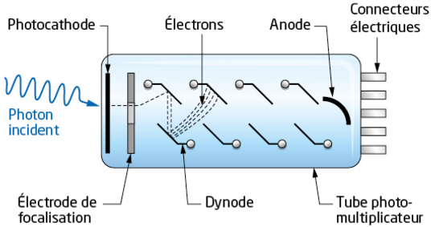
a. Rappeler qualitativement le fonctionnement d'une cellule photoélectrique.
b. La série de dynodes permet de générer, à partir du photoélectron initial, de nombreux autres électrons secondaires par « effet d'avalanche ». Expliquer l'intérêt d'un tel dispositif.
a. Dans une cellule photoélectrique, un photon incident d'énergie h·ν ≥ We (travail d'extraction de la photocathode) est absorbé par un électron de la photocathode, qui est alors éjecté (photoélectron) avec une énergie cinétique Ec = h·ν − We. Ce photoélectron est ensuite collecté par l'anode, créant un courant électrique mesurable dans le circuit extérieur.
b. Un seul photon n'arrache qu'un seul photoélectron, dont le courant associé serait extrêmement faible et difficile à mesurer directement. Dans un photomultiplicateur, ce photoélectron initial est accéléré par la tension appliquée entre la photocathode et la première dynode, où il arrache à son tour plusieurs électrons secondaires par choc (effet d'avalanche) ; ce processus se répète à chaque dynode successive. Au final, un unique photon incident peut donner naissance à un très grand nombre d'électrons collectés à l'anode, ce qui amplifie considérablement le signal électrique et permet de détecter des flux lumineux extrêmement faibles, jusqu'au photon unique.
Les diodes électroluminescentes (DEL) utilisées pour l'éclairage ou les écrans numériques peuvent servir à estimer la valeur de la constante de Planck h.
Soumise à une tension électrique suffisante, une DEL laisse passer le courant électrique en émettant de la
lumière : l'énergie d'un électron se déplaçant dans la DEL est presque entièrement convertie en énergie
d'un photon émis.
Le passage d'un électron dans la DEL ne se produit que s'il possède une énergie minimale, appelée
« énergie de seuil », |ΔE|S = e·US avec US la « tension de seuil » et e la charge électrique élémentaire.
La lumière émise par une DEL est « quasi-monochromatique ». Dans le cadre de certaines hypothèses, on peut
estimer que la longueur d'onde d'émission λ d'une DEL est liée à sa tension de seuil US par la relation
traduisant la conversion d'énergie :
Le programme ci-dessous simule 100 000 tirages aléatoires (selon la loi normale) de US et λ, à partir de leurs valeurs et incertitudes-types, afin d'estimer la valeur de h et son incertitude-type u(h). Les parties à compléter sont surlignées en jaune.
from matplotlib import pyplot as plt
import numpy as np
e=1.602176634e-19 # Charge élémentaire (en C)
c=299792458 # Vitesse de la lumière (en m/s)
# Listes L=[valeur,incertitude-type] en unités SI
Us=[...,...] # Tension de seuil (en V)
Lambda=[...,...] # Longueur d'onde (en m)
def Alea(L): # Tirage aléatoire selon la loi normale
return np.random.normal(L[0],L[1])
# Simulation d'une distribution d pour h
d=[]
Iteration=100000
for j in range(Iteration):
Alea_h=e*Alea(Us)*Alea(Lambda)/c
d.append(Alea_h)
# Calcul de h et de l'incertitude-type u(h)
h=...A compléter... # h <- valeur moyenne de d
u_h=...A compléter... # u(h) <- écart-type de d
#Affichage
print('Constante de Planck h :', h,' J.s')
print('Incertitude-type u(h) :',u_h,' J.s')
plt.hist(d, bins = 50, color = 'blue', edgecolor ='black')
plt.xlabel('h')
plt.ylabel('effectif')
plt.title('Pour %i' %Iteration +' iterations')
plt.show()
📥 Télécharger (version standard)
from matplotlib import pyplot as plt
import numpy as np
e=1.602176634e-19 # Charge élémentaire (en C)
c=299792458 # Vitesse de la lumière (en m/s)
# Listes L=[valeur,incertitude-type] en unités SI
Us=[...,...] # Tension de seuil (en V)
Lambda=[...,...] # Longueur d'onde (en m)
def Alea(L): # Tirage aléatoire selon la loi normale
return np.random.normal(L[0],L[1])
# Simulation d'une distribution d pour h
d=[]
Iteration=100000
for j in range(Iteration):
Alea_h=...A compléter...
d.append(Alea_h)
# Calcul de h et de l'incertitude-type u(h)
h=...A compléter... # h <- valeur moyenne de d
u_h=...A compléter... # u(h) <- écart-type de d
#Affichage
print('Constante de Planck h :', h,' J.s')
print('Incertitude-type u(h) :',u_h,' J.s')
plt.hist(d, bins = 50, color = 'blue', edgecolor ='black')
plt.xlabel('h')
plt.ylabel('effectif')
plt.title('Pour %i' %Iteration +' iterations')
plt.show()
📥 Télécharger (version confirmé)
a. À partir du DOC.1, préciser les hypothèses permettant d'écrire la relation (1).
b. Calculer la valeur de h obtenue.
c. Compléter le programme du DOC.2 afin de simuler un processus aléatoire pour déterminer l'incertitude-type sur la mesure de h.
np.mean() et np.std(d, ddof=1) appliquées à la liste d. Pour la version confirmée, écrivez vous-même la ligne de calcul de Alea_h à partir de la relation (1).d. Préciser si le résultat de la mesure est compatible avec la valeur 6,63×10⁻³⁴ J·s retenue par les scientifiques. Conclure quant à la validité des hypothèses évoquées en a.
e. Citer des applications actuelles, autres que la DEL, mettant en jeu l'interaction lumière-matière.
a. La relation (1) suppose que l'énergie d'un photon émis par la DEL est exactement égale à l'énergie de seuil : Ephoton = |ΔE|S, soit h·c/λ = e·US. Cela revient à admettre que la conversion d'énergie électron → photon est totale (aucune perte, par exemple sous forme de chaleur) et que la lumière émise est parfaitement monochromatique (un photon unique d'énergie h·c/λ, alors qu'elle n'est en réalité que « quasi-monochromatique »).
b. En isolant h dans la relation (1) : h = e·US·λ/c. Avec US = 1,8 V et λ = 635×10⁻⁹ m :
h ≈ 6,10×10⁻³⁴ J·s.
c. Programme complété (version professeur, exécutable ci-dessous) :
from matplotlib import pyplot as plt
import numpy as np
e=1.602176634e-19 # Charge élémentaire (en C)
c=299792458 # Vitesse de la lumière (en m/s)
# Listes L=[valeur,incertitude-type] en unités SI
Us=[1.8,0.05] # Tension de seuil (en V)
Lambda=[635e-9,25e-9] # Longueur d'onde (en m)
def Alea(L): # Tirage aléatoire selon la loi normale
return np.random.normal(L[0],L[1])
# Simulation d'une distribution d pour h
d=[]
Iteration=100000
for j in range(Iteration):
Alea_h=e*Alea(Us)*Alea(Lambda)/c
d.append(Alea_h)
# Calcul de h et de l'incertitude-type u(h)
h=np.mean(d) # h <- valeur moyenne de d
u_h=np.std(d,ddof=1) # u(h) <- écart-type de d
#Affichage
print('Constante de Planck h :', h,' J.s')
print('Incertitude-type u(h) :',u_h,' J.s')
plt.hist(d, bins = 50, color = 'blue', edgecolor ='black')
plt.xlabel('h')
plt.ylabel('effectif')
plt.title('Pour %i' %Iteration +' iterations')
plt.show()
d. La simulation donne h ≈ 6,10×10⁻³⁴ J·s avec une incertitude-type u(h) de l'ordre de 2 à 3×10⁻³⁵ J·s (l'intervalle exact dépend du tirage aléatoire). La valeur de référence 6,63×10⁻³⁴ J·s n'appartient pas à l'intervalle [h − u(h) ; h + u(h)] obtenu : la mesure n'est donc pas compatible avec la valeur scientifique retenue. Cela remet en cause au moins une des hypothèses simplificatrices formulées en a) — en particulier l'hypothèse d'une conversion totale de l'énergie électrique en énergie lumineuse (une DEL réelle dissipe une partie de l'énergie sous forme de chaleur) et celle d'une émission parfaitement monochromatique.
e. D'autres applications mettant en jeu l'interaction lumière-matière : les capteurs de lumière (cellule photoélectrique, photomultiplicateur, photorésistance, photodiode), les cellules photovoltaïques (production d'électricité), et les spectroscopies UV-visible et infrarouge (analyse de la matière) — voir Activité 2.
L'avion solaire Solar Impulse 2 a pour seule source d'énergie le rayonnement solaire.
17 248 cellules photovoltaïques recouvrant une surface de 270 m². Masse 2 300 kg, vitesse maximale 140 km·h⁻¹. 4 moteurs électriques de 17,4 chevaux chacun, de rendement 92 %, avec des batteries lithium polymère pour le vol de nuit.
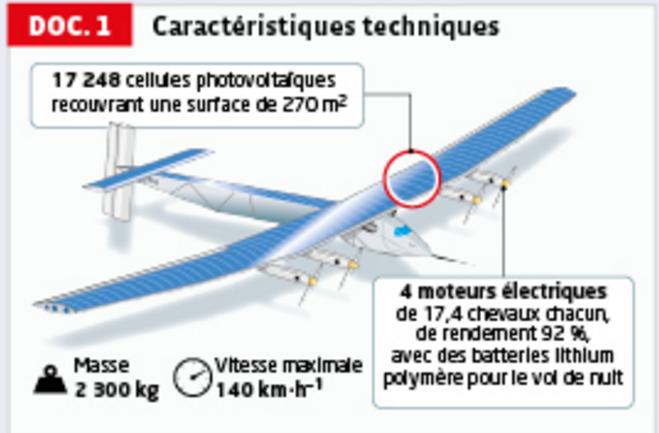
Les cellules photovoltaïques sont généralement composées de silicium, dont l'énergie de gap vaut Eg = 1,12 eV. Or, seuls les photons d'énergie supérieure ou égale à Eg peuvent libérer un électron qui participe au courant électrique délivré par une cellule. Pour augmenter le nombre de photons captés, il faut diminuer l'énergie de gap, mais on récupère alors moins d'énergie par photon, car l'énergie en excès est dissipée sous forme thermique.
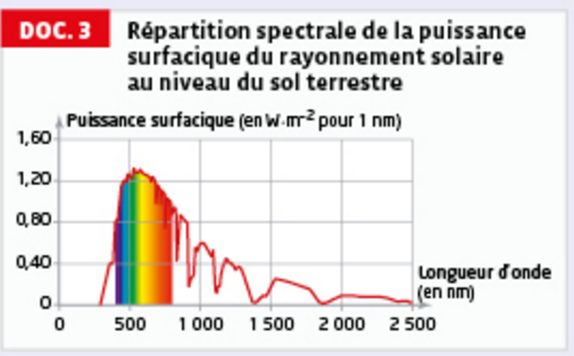
a. Déterminer la valeur du rendement des panneaux solaires de Solar Impulse 2.
b. Porter un regard critique sur la valeur obtenue et proposer une explication au rendement limité des cellules photovoltaïques.
a. Énergie lumineuse reçue par les panneaux durant la journée :
Elum = 450 × 270 × 14 = 1,701×10⁶ W·h = 1 701 kWh.
Rendement : η = Eélec / Elum = 370 / 1701 ≈ 0,218, soit η ≈ 22 %.
b. Cette valeur (≈ 22 %) est cohérente avec le rendement typique des cellules photovoltaïques au silicium utilisées dans l'industrie (de l'ordre de 20 à 25 %) : elle n'a donc rien d'anormal, mais reste très inférieure à 100 %. D'après le DOC.2, cette limitation est intrinsèque au principe même de la cellule à gap unique : les photons d'énergie inférieure à Eg (dans l'infrarouge, cf. DOC.3) ne sont pas absorbés et traversent la cellule sans effet utile, tandis que les photons d'énergie supérieure à Eg voient leur excédent d'énergie dissipé sous forme de chaleur plutôt que converti en électricité. Le spectre solaire (DOC.3) étant très large, une seule valeur de gap ne peut donc jamais exploiter qu'une fraction de l'énergie disponible — ce qui explique le rendement structurellement limité des cellules photovoltaïques classiques.
Paul Olivier · Présentation et interprétation de l'effet photoélectrique
Hatier · Bilan sur l'interaction lumière-matière
Hachette · Bilan énergétique de l'effet photoélectrique